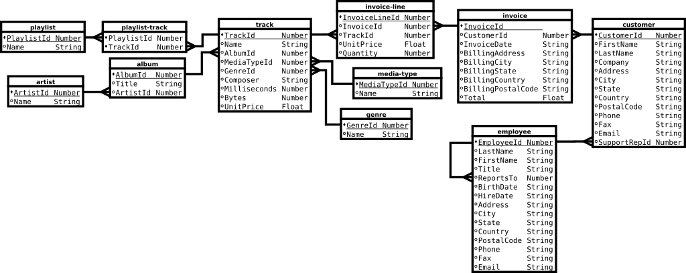

1 Relational Algebra and SQL
The dominant language for writing relational database queries is SQL. Unfortunately, SQL tends to get very complicated very quickly as the query's complexity increases. Furthermore, SQL is far removed, syntactically, from much of the theoretical basis of querying, relation algebra. For creating complicated queries, I prototype them in Python using modules from the relational algebra program, Relational. I forked the code on GitHub and added additional operators as well as code to interface with Emacs Org Mode Babel. You can download an Org file containing the code examples that are described in this post. Also required to run the examples is the Chinook database and a CSV version of the database.
1.1 Interacting with Relational
import sys sys.path.append("/home/devin/projects/relational/") from relational.relation_org import RelationOrg from relational.relation import Relation root_fp = "/home/devin/notes/sql-relational-algebra/chinook/csv/" album = Relation(root_fp + "album.csv") artist = Relation(root_fp + "artist.csv") customer = Relation(root_fp + "customer.csv") employee = Relation(root_fp + "employee.csv") genre = Relation(root_fp + "genre.csv") invoice_line = Relation(root_fp + "invoice-line.csv") invoice = Relation(root_fp + "invoice.csv") media_type = Relation(root_fp + "media-type.csv") playlist_track = Relation(root_fp + "playlist-track.csv") playlist = Relation(root_fp + "playlist.csv") track = Relation(root_fp + "track.csv")
Relational provides a graphical interface, but I find it easier to interact with the code using Python. Relational's Relation class represents relational tables and their operators. Relation requires a file path argument to initialize. This must be CSV a file, where the first line is the header and all elements are quoted. In the above code, the path to the Relational code is added to sys.path and Relation objects are created for each CSV file. The CSV data entries are parsed into four possible types; string, integer, float, and date, which are defined in rtypes.py. Relational does not have a null type. Relational's outer join operators return "—" strings for null values, so three dashes are also used to represent null in the CSV files. Relational treats null values as equal, but SQL sometimes treats them as equal and sometimes not, so some of the examples may need to be changed to treat null equality as desired. Wikipedia has an extensive article on the subject.
With the module, relation_org.py, it is also possible to use Emacs Org tables as input. It provides the class RelationOrg that is derived from the Relation class. In Org, an input table must be given a name and the name must be given as a :var argument in the Babel code block. The column names must be given in the first row and the table must not have any horizontal separators. The :var variables become global variables in the Babel code block with list of list values.
| key | value | | 1 | A | #+BEGIN_SRC python :var alpha_table from relational.relation_org import RelationOrg alpha = RelationOrg(alpha_table) #+END_SRC
In the example, the alpha_table is given the value:
alpha_table = [["key", "value"],["1","A"]]
RelationOrg's initializer can take either a list of lists or a Relation object. It is used to convert Org tables to Relation objects and to print out Relation objects as Org tables, requiring the Python module tabulate.
1.2 Chinook Database
For this post, I will be using the Chinook Database for performing queries. It is an open source database available for many different database servers, but does not include CSV files. The example Org file will need to be modified to correctly reference the Chinook Database, the CSV files, and the Relational source code.
The Chinook database has the following entity-relationship model. 
1.3 Relational Algebra in Python
All relational algebra operations are Relation class methods. Each of these methods returns a new Relation object. Additionally, the Relation object has __eq__, __str__, __len__, __iter__, and __contains__ methods defined; and furthermore, the RelationOrg class overrides the __str__ method to return an Org table string.
Relational is not a full fledged database system and it tends to be very slow compared to any SQL engine. Internally, the table data is stored as a set of tuple rows, and the header is its own Header object type. The data is accessible through the Relation content variable and header through the header variable.
1.3.1 Selection
In relational algebra, the selection function selects rows. The selection method takes a single string of Python code that returns true or false, which it passes to the compile Python internal and then to eval. The table's column names get turned into global variables to the code being evaluated. Numeric strings get turned into numbers, integers or floats, and dates get turned into datetime objects. Nulls are represented by "—" strings. The selection method returns a new table containing only rows having the specified property. In this example, only rows whose ArtistId column is 1 are returned.
import sys sys.path.append("/home/devin/projects/relational/") from relational.relation_org import RelationOrg from relational.relation import Relation root_fp = "/home/devin/notes/sql-relational-algebra/chinook/csv/" album = Relation(root_fp + "album.csv") artist = Relation(root_fp + "artist.csv") customer = Relation(root_fp + "customer.csv") employee = Relation(root_fp + "employee.csv") genre = Relation(root_fp + "genre.csv") invoice_line = Relation(root_fp + "invoice-line.csv") invoice = Relation(root_fp + "invoice.csv") media_type = Relation(root_fp + "media-type.csv") playlist_track = Relation(root_fp + "playlist-track.csv") playlist = Relation(root_fp + "playlist.csv") track = Relation(root_fp + "track.csv") sel = album.selection("ArtistId == 1") return str(RelationOrg(sel))
import sys sys.path.append("/home/devin/projects/relational/") from relational.relation_org import RelationOrg from relational.relation import Relation root_fp = "/home/devin/notes/sql-relational-algebra/chinook/csv/" album = Relation(root_fp + "album.csv") artist = Relation(root_fp + "artist.csv") customer = Relation(root_fp + "customer.csv") employee = Relation(root_fp + "employee.csv") genre = Relation(root_fp + "genre.csv") invoice_line = Relation(root_fp + "invoice-line.csv") invoice = Relation(root_fp + "invoice.csv") media_type = Relation(root_fp + "media-type.csv") playlist_track = Relation(root_fp + "playlist-track.csv") playlist = Relation(root_fp + "playlist.csv") track = Relation(root_fp + "track.csv") sel = employee.selection("ReportsTo == '---'") return str(RelationOrg(sel))
1.3.2 Projection
Projection performs the same function as SQL selection. It takes one or more string arguments, the names of which columns to include in the return table. It can also, instead, take a list of names to project.
import sys sys.path.append("/home/devin/projects/relational/") from relational.relation_org import RelationOrg from relational.relation import Relation root_fp = "/home/devin/notes/sql-relational-algebra/chinook/csv/" album = Relation(root_fp + "album.csv") artist = Relation(root_fp + "artist.csv") customer = Relation(root_fp + "customer.csv") employee = Relation(root_fp + "employee.csv") genre = Relation(root_fp + "genre.csv") invoice_line = Relation(root_fp + "invoice-line.csv") invoice = Relation(root_fp + "invoice.csv") media_type = Relation(root_fp + "media-type.csv") playlist_track = Relation(root_fp + "playlist-track.csv") playlist = Relation(root_fp + "playlist.csv") track = Relation(root_fp + "track.csv") proj = genre.projection("Name") return str(RelationOrg(proj))
1.3.3 Rename
Rename takes a dictionary argument where the keys are the current column names to replace and the values are the corresponding replacements, with all keys and values being strings. A new table is returned with renamed columns. You will have to use this quite often, since the joining methods require that its input tables have all different column names, save the ones being joined on.
import sys sys.path.append("/home/devin/projects/relational/") from relational.relation_org import RelationOrg from relational.relation import Relation root_fp = "/home/devin/notes/sql-relational-algebra/chinook/csv/" album = Relation(root_fp + "album.csv") artist = Relation(root_fp + "artist.csv") customer = Relation(root_fp + "customer.csv") employee = Relation(root_fp + "employee.csv") genre = Relation(root_fp + "genre.csv") invoice_line = Relation(root_fp + "invoice-line.csv") invoice = Relation(root_fp + "invoice.csv") media_type = Relation(root_fp + "media-type.csv") playlist_track = Relation(root_fp + "playlist-track.csv") playlist = Relation(root_fp + "playlist.csv") track = Relation(root_fp + "track.csv") rn = employee.rename({"LastName": "Family", "FirstName": "Given"}) return str(RelationOrg(rn))
1.3.4 Product
Performs a Cartesian product between two tables and returns a new table. The method takes a table as its argument, and applies its argument and it's object to the product operation. None of the columns names in one table can be equal to any column names in the other, so renaming may be necessary.
import sys sys.path.append("/home/devin/projects/relational/") from relational.relation_org import RelationOrg from relational.relation import Relation root_fp = "/home/devin/notes/sql-relational-algebra/chinook/csv/" album = Relation(root_fp + "album.csv") artist = Relation(root_fp + "artist.csv") customer = Relation(root_fp + "customer.csv") employee = Relation(root_fp + "employee.csv") genre = Relation(root_fp + "genre.csv") invoice_line = Relation(root_fp + "invoice-line.csv") invoice = Relation(root_fp + "invoice.csv") media_type = Relation(root_fp + "media-type.csv") playlist_track = Relation(root_fp + "playlist-track.csv") playlist = Relation(root_fp + "playlist.csv") track = Relation(root_fp + "track.csv") prod = employee.product(media_type) return str(RelationOrg(prod))
SELECT DISTINCT * FROM Employee, MediaType;
1.3.5 Set Operations
Relation provides three set operations; union, intersection, and difference. I added the symmetric difference operation. While symmetric difference is not strictly part of relational algebra, it is defined in terms of the other relational algebra set operators. Each of the set methods require that both input tables have the same column names.
-
Union
import sys sys.path.append("/home/devin/projects/relational/") from relational.relation_org import RelationOrg from relational.relation import Relation root_fp = "/home/devin/notes/sql-relational-algebra/chinook/csv/" album = Relation(root_fp + "album.csv") artist = Relation(root_fp + "artist.csv") customer = Relation(root_fp + "customer.csv") employee = Relation(root_fp + "employee.csv") genre = Relation(root_fp + "genre.csv") invoice_line = Relation(root_fp + "invoice-line.csv") invoice = Relation(root_fp + "invoice.csv") media_type = Relation(root_fp + "media-type.csv") playlist_track = Relation(root_fp + "playlist-track.csv") playlist = Relation(root_fp + "playlist.csv") track = Relation(root_fp + "track.csv") e_state = employee.projection("State") c_state = customer.projection("State") union = e_state.union(c_state) return str(RelationOrg(union))
SELECT DISTINCT state FROM Customer UNION SELECT DISTINCT state FROM Employee;
-
Intersection
import sys sys.path.append("/home/devin/projects/relational/") from relational.relation_org import RelationOrg from relational.relation import Relation root_fp = "/home/devin/notes/sql-relational-algebra/chinook/csv/" album = Relation(root_fp + "album.csv") artist = Relation(root_fp + "artist.csv") customer = Relation(root_fp + "customer.csv") employee = Relation(root_fp + "employee.csv") genre = Relation(root_fp + "genre.csv") invoice_line = Relation(root_fp + "invoice-line.csv") invoice = Relation(root_fp + "invoice.csv") media_type = Relation(root_fp + "media-type.csv") playlist_track = Relation(root_fp + "playlist-track.csv") playlist = Relation(root_fp + "playlist.csv") track = Relation(root_fp + "track.csv") e_state = employee.projection("State") c_state = customer.projection("State") inter = c_state.intersection(e_state) return str(RelationOrg(inter))
SELECT DISTINCT state FROM Customer INTERSECT SELECT DISTINCT state FROM Employee;
-
Difference
import sys sys.path.append("/home/devin/projects/relational/") from relational.relation_org import RelationOrg from relational.relation import Relation root_fp = "/home/devin/notes/sql-relational-algebra/chinook/csv/" album = Relation(root_fp + "album.csv") artist = Relation(root_fp + "artist.csv") customer = Relation(root_fp + "customer.csv") employee = Relation(root_fp + "employee.csv") genre = Relation(root_fp + "genre.csv") invoice_line = Relation(root_fp + "invoice-line.csv") invoice = Relation(root_fp + "invoice.csv") media_type = Relation(root_fp + "media-type.csv") playlist_track = Relation(root_fp + "playlist-track.csv") playlist = Relation(root_fp + "playlist.csv") track = Relation(root_fp + "track.csv") e_state = employee.projection("State") c_state = customer.projection("State") diff = c_state.difference(e_state) return str(RelationOrg(diff))
SELECT DISTINCT state FROM Customer EXCEPT SELECT DISTINCT state FROM Employee;
The SQL equivalent to difference is the EXCEPT operator. Not all SQL engines have the EXCEPT operator, such as MySQL. Wikipedia has an example of how to create an except, using left outer join.
-
Symmetric Difference, XOR
import sys sys.path.append("/home/devin/projects/relational/") from relational.relation_org import RelationOrg from relational.relation import Relation root_fp = "/home/devin/notes/sql-relational-algebra/chinook/csv/" album = Relation(root_fp + "album.csv") artist = Relation(root_fp + "artist.csv") customer = Relation(root_fp + "customer.csv") employee = Relation(root_fp + "employee.csv") genre = Relation(root_fp + "genre.csv") invoice_line = Relation(root_fp + "invoice-line.csv") invoice = Relation(root_fp + "invoice.csv") media_type = Relation(root_fp + "media-type.csv") playlist_track = Relation(root_fp + "playlist-track.csv") playlist = Relation(root_fp + "playlist.csv") track = Relation(root_fp + "track.csv") e_state = employee.projection("State") c_state = customer.projection("State") sym = e_state.symmetric_diff(c_state) return str(RelationOrg(sym))
SELECT * FROM (SELECT DISTINCT state FROM Customer UNION SELECT DISTINCT state FROM Employee) EXCEPT SELECT * FROM (SELECT DISTINCT state FROM Customer INTERSECT SELECT DISTINCT state FROM Employee);
1.3.6 Joins
The Relational program comes with most of the relational algebra join operations including the extended relational algebra outer join operations. I added semijoin_left, semijoin_right, and antijoin. Also note that null values are considered equal.
-
Natural Join and Semijoin
The natural join methods (join, semijoin_left, and semijoin_right) each take one argument, join its table object to the argument table. and return a new table. The join method returns a table with all the different column names in each table. semijoin_left returns only those columns in the method's object, while semijoin_right returns only those columns in the table argument. Tables will be joined on columns with equivalent names. If there are no names in common, then the Cartesian product is returned.
-
Natural Join
import sys sys.path.append("/home/devin/projects/relational/") from relational.relation_org import RelationOrg from relational.relation import Relation root_fp = "/home/devin/notes/sql-relational-algebra/chinook/csv/" album = Relation(root_fp + "album.csv") artist = Relation(root_fp + "artist.csv") customer = Relation(root_fp + "customer.csv") employee = Relation(root_fp + "employee.csv") genre = Relation(root_fp + "genre.csv") invoice_line = Relation(root_fp + "invoice-line.csv") invoice = Relation(root_fp + "invoice.csv") media_type = Relation(root_fp + "media-type.csv") playlist_track = Relation(root_fp + "playlist-track.csv") playlist = Relation(root_fp + "playlist.csv") track = Relation(root_fp + "track.csv") cn = customer.rename({"SupportRepId": "EmployeeId", "LastName": "cLastName", "FirstName": "cFirstName", "Company": "cCompany", "Address": "cAddress", "City": "cCity", "State": "cState", "Country": "cCountry", "PostalCode": "cPostalCode", "Phone": "cPhone", "Fax": "cFax", "Email": "cEmail"}) jn = employee.join(cn) return str(RelationOrg(jn))
SELECT DISTINCT EmployeeId, Employee.LastName AS eLastName, Employee.FirstName AS eFirstName, Employee.Title AS eTitle, Employee.ReportsTo AS eReportsTo, Employee.BirthDate AS eBirthDate, Employee.HireDate AS eHireDate, Employee.Address AS eAddress, Employee.City AS eCity, Employee.State AS eState, Employee.Country AS eCountry, Employee.PostalCode AS ePostalCode, Employee.Phone AS ePhone, Employee.Fax AS eFax, Employee.Email AS eEmail, Customer.CustomerId AS cCustomerId, Customer.FirstName AS cFirstName, Customer.LastName AS cLastName, Customer.Company AS cCompany, Customer.Address AS cAddress, Customer.City AS cCity, Customer.State AS cState, Customer.Country AS cCountry, Customer.PostalCode AS cPostalCode, Customer.Phone AS cPhone, Customer.Fax AS cFax, Customer.Email AS cEmail FROM Employee JOIN Customer ON Employee.EmployeeId = Customer.SupportRepId;
-
Semijoin Left
import sys sys.path.append("/home/devin/projects/relational/") from relational.relation_org import RelationOrg from relational.relation import Relation root_fp = "/home/devin/notes/sql-relational-algebra/chinook/csv/" album = Relation(root_fp + "album.csv") artist = Relation(root_fp + "artist.csv") customer = Relation(root_fp + "customer.csv") employee = Relation(root_fp + "employee.csv") genre = Relation(root_fp + "genre.csv") invoice_line = Relation(root_fp + "invoice-line.csv") invoice = Relation(root_fp + "invoice.csv") media_type = Relation(root_fp + "media-type.csv") playlist_track = Relation(root_fp + "playlist-track.csv") playlist = Relation(root_fp + "playlist.csv") track = Relation(root_fp + "track.csv") cn = customer.rename({"SupportRepId": "EmployeeId", "LastName": "cLastName", "FirstName": "cFirstName", "Company": "cCompany", "Address": "cAddress", "City": "cCity", "State": "cState", "Country": "cCountry", "PostalCode": "cPostalCode", "Phone": "cPhone", "Fax": "cFax", "Email": "cEmail"}) jn = employee.semijoin_left(cn) return str(RelationOrg(jn))
SELECT DISTINCT EmployeeId, Employee.LastName AS eLastName, Employee.FirstName AS eFirstName, Employee.Title AS eTitle, Employee.ReportsTo AS eReportsTo, Employee.BirthDate AS eBirthDate, Employee.HireDate AS eHireDate, Employee.Address AS eAddress, Employee.City AS eCity, Employee.State AS eState, Employee.Country AS eCountry, Employee.PostalCode AS ePostalCode, Employee.Phone AS ePhone, Employee.Fax AS eFax, Employee.Email AS eEmail FROM Employee JOIN Customer ON Employee.EmployeeId = Customer.SupportRepId;
-
Semijoin Right
import sys sys.path.append("/home/devin/projects/relational/") from relational.relation_org import RelationOrg from relational.relation import Relation root_fp = "/home/devin/notes/sql-relational-algebra/chinook/csv/" album = Relation(root_fp + "album.csv") artist = Relation(root_fp + "artist.csv") customer = Relation(root_fp + "customer.csv") employee = Relation(root_fp + "employee.csv") genre = Relation(root_fp + "genre.csv") invoice_line = Relation(root_fp + "invoice-line.csv") invoice = Relation(root_fp + "invoice.csv") media_type = Relation(root_fp + "media-type.csv") playlist_track = Relation(root_fp + "playlist-track.csv") playlist = Relation(root_fp + "playlist.csv") track = Relation(root_fp + "track.csv") cn = customer.rename({"SupportRepId": "EmployeeId", "LastName": "cLastName", "FirstName": "cFirstName", "Company": "cCompany", "Address": "cAddress", "City": "cCity", "State": "cState", "Country": "cCountry", "PostalCode": "cPostalCode", "Phone": "cPhone", "Fax": "cFax", "Email": "cEmail"}) jn = employee.semijoin_right(cn) return str(RelationOrg(jn))
SELECT DISTINCT EmployeeId, Customer.CustomerId AS cCustomerId, Customer.FirstName AS cFirstName, Customer.LastName AS cLastName, Customer.Company AS cCompany, Customer.Address AS cAddress, Customer.City AS cCity, Customer.State AS cState, Customer.Country AS cCountry, Customer.PostalCode AS cPostalCode, Customer.Phone AS cPhone, Customer.Fax AS cFax, Customer.Email AS cEmail FROM Employee JOIN Customer ON Employee.EmployeeId = Customer.SupportRepId;
-
Natural Join
-
Theta Join
The thetajoin method requires two arguments; the table to join on and a selection argument. Internally, it performs the Cartesian product on the two tables and selects those rows from the resulting table satisfying the input expression. So all column names must be unique. Refer to the section on Selection for details on the selection argument.
import sys sys.path.append("/home/devin/projects/relational/") from relational.relation_org import RelationOrg from relational.relation import Relation root_fp = "/home/devin/notes/sql-relational-algebra/chinook/csv/" album = Relation(root_fp + "album.csv") artist = Relation(root_fp + "artist.csv") customer = Relation(root_fp + "customer.csv") employee = Relation(root_fp + "employee.csv") genre = Relation(root_fp + "genre.csv") invoice_line = Relation(root_fp + "invoice-line.csv") invoice = Relation(root_fp + "invoice.csv") media_type = Relation(root_fp + "media-type.csv") playlist_track = Relation(root_fp + "playlist-track.csv") playlist = Relation(root_fp + "playlist.csv") track = Relation(root_fp + "track.csv") cn = customer.rename({"LastName": "cLastName", "FirstName": "cFirstName", "Company": "cCompany", "Address": "cAddress", "City": "cCity", "State": "cState", "Country": "cCountry", "PostalCode": "cPostalCode", "Phone": "cPhone", "Fax": "cFax", "Email": "cEmail"}) jn = employee.thetajoin(cn, "SupportRepId == 1 + EmployeeId") return str(RelationOrg(jn))
SELECT DISTINCT EmployeeId, SupportRepId, Employee.LastName AS eLastName, Employee.FirstName AS eFirstName, Employee.Title AS eTitle, Employee.ReportsTo AS eReportsTo, Employee.BirthDate AS eBirthDate, Employee.HireDate AS eHireDate, Employee.Address AS eAddress, Employee.City AS eCity, Employee.State AS eState, Employee.Country AS eCountry, Employee.PostalCode AS ePostalCode, Employee.Phone AS ePhone, Employee.Fax AS eFax, Employee.Email AS eEmail, Customer.CustomerId AS cCustomerId, Customer.FirstName AS cFirstName, Customer.LastName AS cLastName, Customer.Company AS cCompany, Customer.Address AS cAddress, Customer.City AS cCity, Customer.State AS cState, Customer.Country AS cCountry, Customer.PostalCode AS cPostalCode, Customer.Phone AS cPhone, Customer.Fax AS cFax, Customer.Email AS cEmail FROM Employee JOIN Customer ON Employee.EmployeeId = 1 + Customer.SupportRepId;
-
Outer Joins
Relation provides full outer join (outer), outer join left (outer_left), and outer join right (outer_right). When printing the result of an outer join, null is represented by "—". Like the natural join methods, these methods take a single table argument and perform a join with the method's object.
-
Outer Left Join
import sys sys.path.append("/home/devin/projects/relational/") from relational.relation_org import RelationOrg from relational.relation import Relation root_fp = "/home/devin/notes/sql-relational-algebra/chinook/csv/" album = Relation(root_fp + "album.csv") artist = Relation(root_fp + "artist.csv") customer = Relation(root_fp + "customer.csv") employee = Relation(root_fp + "employee.csv") genre = Relation(root_fp + "genre.csv") invoice_line = Relation(root_fp + "invoice-line.csv") invoice = Relation(root_fp + "invoice.csv") media_type = Relation(root_fp + "media-type.csv") playlist_track = Relation(root_fp + "playlist-track.csv") playlist = Relation(root_fp + "playlist.csv") track = Relation(root_fp + "track.csv") cn = customer.rename({"SupportRepId": "EmployeeId", "LastName": "cLastName", "FirstName": "cFirstName", "Company": "cCompany", "Address": "cAddress", "City": "cCity", "State": "cState", "Country": "cCountry", "PostalCode": "cPostalCode", "Phone": "cPhone", "Fax": "cFax", "Email": "cEmail"}) jn = employee.outer_left(cn) return str(RelationOrg(jn))
SELECT DISTINCT EmployeeId, Employee.LastName AS eLastName, Employee.FirstName AS eFirstName, Employee.Title AS eTitle, Employee.ReportsTo AS eReportsTo, Employee.BirthDate AS eBirthDate, Employee.HireDate AS eHireDate, Employee.Address AS eAddress, Employee.City AS eCity, Employee.State AS eState, Employee.Country AS eCountry, Employee.PostalCode AS ePostalCode, Employee.Phone AS ePhone, Employee.Fax AS eFax, Employee.Email AS eEmail, Customer.CustomerId AS cCustomerId, Customer.FirstName AS cFirstName, Customer.LastName AS cLastName, Customer.Company AS cCompany, Customer.Address AS cAddress, Customer.City AS cCity, Customer.State AS cState, Customer.Country AS cCountry, Customer.PostalCode AS cPostalCode, Customer.Phone AS cPhone, Customer.Fax AS cFax, Customer.Email AS cEmail FROM Employee LEFT JOIN Customer ON Employee.EmployeeId = Customer.SupportRepId;
-
Outer Right Join
import sys sys.path.append("/home/devin/projects/relational/") from relational.relation_org import RelationOrg from relational.relation import Relation root_fp = "/home/devin/notes/sql-relational-algebra/chinook/csv/" album = Relation(root_fp + "album.csv") artist = Relation(root_fp + "artist.csv") customer = Relation(root_fp + "customer.csv") employee = Relation(root_fp + "employee.csv") genre = Relation(root_fp + "genre.csv") invoice_line = Relation(root_fp + "invoice-line.csv") invoice = Relation(root_fp + "invoice.csv") media_type = Relation(root_fp + "media-type.csv") playlist_track = Relation(root_fp + "playlist-track.csv") playlist = Relation(root_fp + "playlist.csv") track = Relation(root_fp + "track.csv") cn = customer.rename({"SupportRepId": "EmployeeId", "LastName": "cLastName", "FirstName": "cFirstName", "Company": "cCompany", "Address": "cAddress", "City": "cCity", "State": "cState", "Country": "cCountry", "PostalCode": "cPostalCode", "Phone": "cPhone", "Fax": "cFax", "Email": "cEmail"}) jn = employee.outer_right(cn) return str(RelationOrg(jn))
SELECT DISTINCT EmployeeId, Employee.LastName AS eLastName, Employee.FirstName AS eFirstName, Employee.Title AS eTitle, Employee.ReportsTo AS eReportsTo, Employee.BirthDate AS eBirthDate, Employee.HireDate AS eHireDate, Employee.Address AS eAddress, Employee.City AS eCity, Employee.State AS eState, Employee.Country AS eCountry, Employee.PostalCode AS ePostalCode, Employee.Phone AS ePhone, Employee.Fax AS eFax, Employee.Email AS eEmail, Customer.CustomerId AS cCustomerId, Customer.FirstName AS cFirstName, Customer.LastName AS cLastName, Customer.Company AS cCompany, Customer.Address AS cAddress, Customer.City AS cCity, Customer.State AS cState, Customer.Country AS cCountry, Customer.PostalCode AS cPostalCode, Customer.Phone AS cPhone, Customer.Fax AS cFax, Customer.Email AS cEmail FROM Customer LEFT JOIN Employee ON Employee.EmployeeId = Customer.SupportRepId;
-
Full Outer Join
import sys sys.path.append("/home/devin/projects/relational/") from relational.relation_org import RelationOrg from relational.relation import Relation root_fp = "/home/devin/notes/sql-relational-algebra/chinook/csv/" album = Relation(root_fp + "album.csv") artist = Relation(root_fp + "artist.csv") customer = Relation(root_fp + "customer.csv") employee = Relation(root_fp + "employee.csv") genre = Relation(root_fp + "genre.csv") invoice_line = Relation(root_fp + "invoice-line.csv") invoice = Relation(root_fp + "invoice.csv") media_type = Relation(root_fp + "media-type.csv") playlist_track = Relation(root_fp + "playlist-track.csv") playlist = Relation(root_fp + "playlist.csv") track = Relation(root_fp + "track.csv") cn = customer.rename({"SupportRepId": "EmployeeId", "LastName": "cLastName", "FirstName": "cFirstName", "Company": "cCompany", "Address": "cAddress", "City": "cCity", "State": "cState", "Country": "cCountry", "PostalCode": "cPostalCode", "Phone": "cPhone", "Fax": "cFax", "Email": "cEmail"}) jn = employee.outer(cn) return str(RelationOrg(jn))
SELECT DISTINCT EmployeeId, Employee.LastName AS eLastName, Employee.FirstName AS eFirstName, Employee.Title AS eTitle, Employee.ReportsTo AS eReportsTo, Employee.BirthDate AS eBirthDate, Employee.HireDate AS eHireDate, Employee.Address AS eAddress, Employee.City AS eCity, Employee.State AS eState, Employee.Country AS eCountry, Employee.PostalCode AS ePostalCode, Employee.Phone AS ePhone, Employee.Fax AS eFax, Employee.Email AS eEmail, Customer.CustomerId AS cCustomerId, Customer.FirstName AS cFirstName, Customer.LastName AS cLastName, Customer.Company AS cCompany, Customer.Address AS cAddress, Customer.City AS cCity, Customer.State AS cState, Customer.Country AS cCountry, Customer.PostalCode AS cPostalCode, Customer.Phone AS cPhone, Customer.Fax AS cFax, Customer.Email AS cEmail FROM Employee LEFT JOIN Customer ON Employee.EmployeeId = Customer.SupportRepId UNION SELECT DISTINCT EmployeeId, Employee.LastName AS eLastName, Employee.FirstName AS eFirstName, Employee.Title AS eTitle, Employee.ReportsTo AS eReportsTo, Employee.BirthDate AS eBirthDate, Employee.HireDate AS eHireDate, Employee.Address AS eAddress, Employee.City AS eCity, Employee.State AS eState, Employee.Country AS eCountry, Employee.PostalCode AS ePostalCode, Employee.Phone AS ePhone, Employee.Fax AS eFax, Employee.Email AS eEmail, Customer.CustomerId AS cCustomerId, Customer.FirstName AS cFirstName, Customer.LastName AS cLastName, Customer.Company AS cCompany, Customer.Address AS cAddress, Customer.City AS cCity, Customer.State AS cState, Customer.Country AS cCountry, Customer.PostalCode AS cPostalCode, Customer.Phone AS cPhone, Customer.Fax AS cFax, Customer.Email AS cEmail FROM Customer LEFT JOIN Employee ON Employee.EmployeeId = Customer.SupportRepId;
-
Outer Left Join
-
Anti-Join
Relational does not currently provide an anti-join operation. Antijoin returns those entries in the first table that do not have a corresponding joining value in the second table. I added the antijoin operation to Relational using the definition given on Wikipedia;
return self.difference(self.semijoin_left(other))
Like other methods in the Relational class, antijoin takes a single table class argument, anti-joins it onto the acting object, and returns a new table object. In the following example, employee is antijoined with customer, joining on EmployeeId. Equivalently named columns that are not joined on have to be renamed in one of the tables.
import sys sys.path.append("/home/devin/projects/relational/") from relational.relation_org import RelationOrg from relational.relation import Relation root_fp = "/home/devin/notes/sql-relational-algebra/chinook/csv/" album = Relation(root_fp + "album.csv") artist = Relation(root_fp + "artist.csv") customer = Relation(root_fp + "customer.csv") employee = Relation(root_fp + "employee.csv") genre = Relation(root_fp + "genre.csv") invoice_line = Relation(root_fp + "invoice-line.csv") invoice = Relation(root_fp + "invoice.csv") media_type = Relation(root_fp + "media-type.csv") playlist_track = Relation(root_fp + "playlist-track.csv") playlist = Relation(root_fp + "playlist.csv") track = Relation(root_fp + "track.csv") cn = customer.rename({"SupportRepId": "EmployeeId", "LastName": "cLastName", "FirstName": "cFirstName", "Company": "cCompany", "Address": "cAddress", "City": "cCity", "State": "cState", "Country": "cCountry", "PostalCode": "cPostalCode", "Phone": "cPhone", "Fax": "cFax", "Email": "cEmail"}) jn = employee.antijoin(cn) return str(RelationOrg(jn))
-
With Correlated Subqueries
In SQL, the typical way of performing an antijoin is by using correlated subqueries.
SELECT DISTINCT EmployeeId, Employee.LastName, Employee.FirstName, Employee.Title, Employee.ReportsTo, Employee.BirthDate, Employee.HireDate, Employee.Address, Employee.City, Employee.State, Employee.Country, Employee.PostalCode, Employee.Phone, Employee.Fax, Employee.Email FROM Employee WHERE NOT EXISTS (SELECT * FROM Customer WHERE Employee.EmployeeId = Customer.SupportRepId);
This query has the following plan in SQLite.
EXPLAIN QUERY PLAN SELECT DISTINCT EmployeeId, Employee.LastName, Employee.FirstName, Employee.Title, Employee.ReportsTo, Employee.BirthDate, Employee.HireDate, Employee.Address, Employee.City, Employee.State, Employee.Country, Employee.PostalCode, Employee.Phone, Employee.Fax, Employee.Email FROM Employee WHERE NOT EXISTS (SELECT * FROM Customer WHERE Employee.EmployeeId = Customer.SupportRepId);
-
With the Relation Algebra Definition
SELECT DISTINCT * FROM Employee EXCEPT SELECT EmployeeId, Employee.LastName, Employee.FirstName, Employee.Title, Employee.ReportsTo, Employee.BirthDate, Employee.HireDate, Employee.Address, Employee.City, Employee.State, Employee.Country, Employee.PostalCode, Employee.Phone, Employee.Fax, Employee.Email FROM Employee JOIN Customer ON Employee.EmployeeId = Customer.SupportRepId;
It has the following plan in SQLite.
EXPLAIN QUERY PLAN SELECT DISTINCT * FROM Employee EXCEPT SELECT EmployeeId, Employee.LastName, Employee.FirstName, Employee.Title, Employee.ReportsTo, Employee.BirthDate, Employee.HireDate, Employee.Address, Employee.City, Employee.State, Employee.Country, Employee.PostalCode, Employee.Phone, Employee.Fax, Employee.Email FROM Employee JOIN Customer ON Employee.EmployeeId = Customer.SupportRepId;
This query selects all columns in the Employee table, so select * rather than explicitly specifying columns should not affect the query. This anti-join might not produce the same results in all cases as the other due to null equality handling differences. EXCEPT treats them as equivalent. I prefer this one over the former. With toolkits such as SQLAlchemy, it is difficult to code correlated subqueries. Furthermore, this version may be faster, reasons for which I will detail later. It may be possible to modify this query to treat nulls as not equal. This issue would only arise if nulls exist in the joining columns. Null columns could be added to the anti-join result by intersecting the projection of the two tables' joining columns, selecting those rows that contain nulls, select the corresponding rows in the first table, and unioning them to the antijoin result.
-
With Correlated Subqueries
-
Division
Division is an operation that is somewhat difficult to grasp, and the traditional correlated SQL query even more difficult. When dividing one table by another, columns unique to the first table are returned. The column names in the second table must be a subset of the first. Rows in the first table can be thought of as being grouped by values in the return columns. A group is returned only if, for every row in the second table, there exists a row in the group with values that exist in the second table.
In Python, like the other Relational methods, division takes a single table argument and returns a relation table object.
import sys sys.path.append("/home/devin/projects/relational/") from relational.relation_org import RelationOrg from relational.relation import Relation root_fp = "/home/devin/notes/sql-relational-algebra/chinook/csv/" album = Relation(root_fp + "album.csv") artist = Relation(root_fp + "artist.csv") customer = Relation(root_fp + "customer.csv") employee = Relation(root_fp + "employee.csv") genre = Relation(root_fp + "genre.csv") invoice_line = Relation(root_fp + "invoice-line.csv") invoice = Relation(root_fp + "invoice.csv") media_type = Relation(root_fp + "media-type.csv") playlist_track = Relation(root_fp + "playlist-track.csv") playlist = Relation(root_fp + "playlist.csv") track = Relation(root_fp + "track.csv") cp = customer.projection("CustomerId", "State") ep = employee.projection("State") div = cp.division(ep) cust = customer.semijoin_left(div) return str(RelationOrg(cust))
-
Example
In this example, columns A and B are common to the input tables and C and D are unique to the first. Only the group of rows with 0,0 in C,D have all of the A,B columns values existing in the second table.
A B C D 0 1 0 0 1 0 0 0 1 1 0 0 1 0 1 0 1 1 3 1 A B 1 0 1 1 import sys sys.path.append("/home/devin/projects/relational/") from relational.relation_org import RelationOrg rel1 = RelationOrg(in_table) rel2 = RelationOrg(other_table) prod = rel1.division(rel2) return str(RelationOrg(prod))
| D | C | |---+---| | 0 | 0 |
-
Relational Algebra Definition
The Wikipedia page on relational algebra defines the division of table \(R\) by table \(S\) as: \(R\div S = \pi_pR - V\); where \(p\) is the set of columns unique to \(R\).
Substituting \(V\): \(R\div S = \pi_pR - \pi_pU\) Substituting U: \(R\div S = \pi_pR - \pi_p(T - R)\) Substituting T: \(R\div S = \pi_pR - \pi_p(\pi_pR\times S - R)\)
In Relational Python:
import sys sys.path.append("/home/devin/projects/relational/") from relational.relation_org import RelationOrg from relational.relation import Relation root_fp = "/home/devin/notes/sql-relational-algebra/chinook/csv/" album = Relation(root_fp + "album.csv") artist = Relation(root_fp + "artist.csv") customer = Relation(root_fp + "customer.csv") employee = Relation(root_fp + "employee.csv") genre = Relation(root_fp + "genre.csv") invoice_line = Relation(root_fp + "invoice-line.csv") invoice = Relation(root_fp + "invoice.csv") media_type = Relation(root_fp + "media-type.csv") playlist_track = Relation(root_fp + "playlist-track.csv") playlist = Relation(root_fp + "playlist.csv") track = Relation(root_fp + "track.csv") cp = customer.projection("CustomerId", "State") ep = employee.projection("State") pi_c = cp.projection("CustomerId") cross = pi_c.product(ep) diff = cross.difference(cp) pi_diff = diff.projection("CustomerId") div = pi_c.difference(pi_diff) return str(RelationOrg(div))
-
With Correlated Subqueries
The way division is traditionally performed in SQL textbooks is by using correlated subqueries.
SELECT DISTINCT Quotient.CustomerId FROM Customer AS Quotient WHERE NOT EXISTS (SELECT Dividend.state FROM Employee AS Dividend WHERE NOT EXISTS (SELECT Divisor.state FROM Customer AS Divisor WHERE Dividend.state = Divisor.state AND Quotient.CustomerId = Divisor.CustomerId));
This query has the following plan in SQLite.
EXPLAIN QUERY PLAN SELECT DISTINCT Quotient.CustomerId FROM Customer AS Quotient WHERE NOT EXISTS (SELECT Dividend.state FROM Employee AS Dividend WHERE NOT EXISTS (SELECT Divisor.state FROM Customer AS Divisor WHERE Dividend.state = Divisor.state AND Quotient.CustomerId = Divisor.CustomerId));
-
With the Relation Algebra Definition
SELECT DISTINCT CustomerId FROM Customer EXCEPT SELECT CustomerID FROM (SELECT Customer.CustomerId, Employee.state FROM Customer, Employee EXCEPT SELECT CustomerId, state FROM Customer);
EXPLAIN QUERY PLAN SELECT DISTINCT CustomerId FROM Customer EXCEPT SELECT CustomerID FROM (SELECT Customer.CustomerId, Employee.state FROM Customer, Employee EXCEPT SELECT CustomerId, state FROM Customer);
This query plan is two steps longer than the correlated subquery version; however, I have found this version faster (more on that in the next section), and this version is more easily coded in toolkits like SQLAlchemy. With this version, null values are treated as equal. If there are nulls in the second table, and if nulls are not equal, then division should always return an empty table. If there are null values in the columns unique to the first table, and nulls are not equal, then those rows can only be returned if the second table is one row long.
-
SQL using aggregation
Adapted from p. 715 of SQL for Smarties.
SELECT DISTINCT CustomerId FROM Customer, Employee WHERE Customer.state = Employee.state GROUP BY Customer.CustomerId HAVING COUNT(Customer.state) = (SELECT COUNT(state) FROM Employee);
-
Example
1.4 Complex Queries
As I mentioned in the introduction, I find Relational useful for prototyping complex queries. In this example, I will join a bunch of tables in the Chinook database and then increase the complexity in the next section by adding division. You will likely find it easier to follow what is going on in the Relational version rather than the SQL version. The SQL versions were coded after the Relational version was written.
1.4.1 Multiple Joins
The following code joins the tables: artist, album, track, genre, playlist_track, and playlist; they are all joined together in order to find playlists that contain rock and list the artists on those playlists.
import sys sys.path.append("/home/devin/projects/relational/") from relational.relation_org import RelationOrg from relational.relation import Relation root_fp = "/home/devin/notes/sql-relational-algebra/chinook/csv/" album = Relation(root_fp + "album.csv") artist = Relation(root_fp + "artist.csv") customer = Relation(root_fp + "customer.csv") employee = Relation(root_fp + "employee.csv") genre = Relation(root_fp + "genre.csv") invoice_line = Relation(root_fp + "invoice-line.csv") invoice = Relation(root_fp + "invoice.csv") media_type = Relation(root_fp + "media-type.csv") playlist_track = Relation(root_fp + "playlist-track.csv") playlist = Relation(root_fp + "playlist.csv") track = Relation(root_fp + "track.csv") artist_rn = artist.rename({"Name": "artist_name"}) track_rn = track.projection("TrackId", "AlbumId", "GenreId") genre_rn = genre.selection("Name == 'Rock'").projection("GenreId") playlist_rn = playlist.rename({"Name": "playlist_name"}) album_artist = artist_rn.join(album).projection("artist_name", "AlbumId") a_a_track = album_artist.join(track_rn).projection("TrackId", "GenreId", "artist_name") a_a_t_g = a_a_track.join(genre_rn).projection("TrackId", "artist_name") a_a_t_g_pt = a_a_t_g.join(playlist_track) result = a_a_t_g_pt.join(playlist_rn).projection("artist_name", "playlist_name") return str(RelationOrg(result))
In SQL, this translates to:
SELECT DISTINCT a_a_t_g_pt.Name, Playlist.Name FROM Playlist JOIN (SELECT * FROM PlaylistTrack JOIN (SELECT TrackId, a_a_track.Name FROM Genre JOIN (SELECT TrackId, GenreId, album_artist.Name FROM Track JOIN (SELECT Artist.Name, AlbumId FROM Artist JOIN Album USING (ArtistId)) AS album_artist USING (AlbumId)) AS a_a_track USING (GenreId) WHERE Genre.Name = 'Rock') USING (TrackId)) AS a_a_t_g_pt USING (PlaylistId);
You will notice that the Relational version is sequential, while the SQL version is nested, five levels deep. The SQL version could be made more sequential by using temporary tables or common table expressions (CTEs), depending on the SQL engine. However, SQL still requires you to do, in every SQL query, a projection plus zero or more other operations, so it is never going to be as succinct. Furthermore, if you are using tools such as SQLAlchemy, you are either forced to write plain SQL, hope that the tool supports whatever mechanism the database uses to create temporary tables, or use the nested version. (SQLAlchemy does not support MySQL temporary tables, it does support CTEs; however, MySQL does not have CTEs).
1.4.2 Adding Division
To make the previous query more interesting, the selected playlists must now contain metal and heavy metal in addition to rock, and we also want to display the genres on the playlist. All of the same joins are made, but there are two tables derived from the genre table; one to join on and the other to divide with. After doing all of the joins, the resulting table is divided by a projected genre table. The resulting table is joined with the table that was divided, getting back those columns that the division removed. The genre table is also joined on to get the genre names. We then project the columns we want.
import sys sys.path.append("/home/devin/projects/relational/") from relational.relation_org import RelationOrg from relational.relation import Relation root_fp = "/home/devin/notes/sql-relational-algebra/chinook/csv/" album = Relation(root_fp + "album.csv") artist = Relation(root_fp + "artist.csv") customer = Relation(root_fp + "customer.csv") employee = Relation(root_fp + "employee.csv") genre = Relation(root_fp + "genre.csv") invoice_line = Relation(root_fp + "invoice-line.csv") invoice = Relation(root_fp + "invoice.csv") media_type = Relation(root_fp + "media-type.csv") playlist_track = Relation(root_fp + "playlist-track.csv") playlist = Relation(root_fp + "playlist.csv") track = Relation(root_fp + "track.csv") artist_rn = artist.rename({"Name": "artist_name"}) track_rn = track.projection("TrackId", "AlbumId", "GenreId") genre_p = genre.projection("GenreId") genre_div = genre.selection("Name == 'Metal' or Name == 'Heavy Metal' or Name == 'Rock'").projection("GenreId") playlist_rn = playlist.rename({"Name": "playlist_name"}) album_artist = artist_rn.join(album).projection("artist_name", "AlbumId") # join on AristId a_a_track = album_artist.join(track_rn).projection("TrackId", "GenreId", "artist_name") # join on AlbumId a_a_t_g = a_a_track.join(genre_p).projection("TrackId", "artist_name", "GenreId") # join on GenreId a_a_t_g_pt = a_a_t_g.join(playlist_track) # join on TrackId, columns: "TrackId", "artist_name", "GenreId", "PlaylistId" a_a_t_g_pt_p = a_a_t_g_pt.join(playlist_rn) # join on PlaylistId, columns: "TrackId", "artist_name", "GenreId", "PlaylistId", "playlist_name" quot = a_a_t_g_pt_p.projection("GenreId", "PlaylistId").division(genre_div) # resulting columns: "PlaylistId" a_a_t_g_pt_p_q = a_a_t_g_pt_p.join(quot) # join on PlaylistId, columns: "TrackId", "artist_name", "GenreId", "PlaylistId", "playlist_name" result = a_a_t_g_pt_p_q.join(genre).projection("artist_name", "playlist_name", "Name") # join on GenreId, "Name' is genre Name return str(len(RelationOrg(result)))
Expanding the division results in:
import sys sys.path.append("/home/devin/projects/relational/") from relational.relation_org import RelationOrg from relational.relation import Relation root_fp = "/home/devin/notes/sql-relational-algebra/chinook/csv/" album = Relation(root_fp + "album.csv") artist = Relation(root_fp + "artist.csv") customer = Relation(root_fp + "customer.csv") employee = Relation(root_fp + "employee.csv") genre = Relation(root_fp + "genre.csv") invoice_line = Relation(root_fp + "invoice-line.csv") invoice = Relation(root_fp + "invoice.csv") media_type = Relation(root_fp + "media-type.csv") playlist_track = Relation(root_fp + "playlist-track.csv") playlist = Relation(root_fp + "playlist.csv") track = Relation(root_fp + "track.csv") artist_rn = artist.rename({"Name": "artist_name"}) track_rn = track.projection("TrackId", "AlbumId", "GenreId") genre_p = genre.projection("GenreId") genre_div = genre.selection("Name == 'Metal' or Name == 'Heavy Metal' or Name == 'Rock'").projection("GenreId") playlist_rn = playlist.rename({"Name": "playlist_name"}) album_artist = artist_rn.join(album).projection("artist_name", "AlbumId") # join on AristId a_a_track = album_artist.join(track_rn).projection("TrackId", "GenreId", "artist_name") # join on AlbumId a_a_t_g = a_a_track.join(genre_p).projection("TrackId", "artist_name", "GenreId") # join on GenreId a_a_t_g_pt = a_a_t_g.join(playlist_track) # join on TrackId, columns: "TrackId", "artist_name", "GenreId", "PlaylistId" a_a_t_g_pt_p = a_a_t_g_pt.join(playlist_rn) # join on PlaylistId, columns: "TrackId", "artist_name", "GenreId", "PlaylistId", "playlist_name" dividend = a_a_t_g_pt_p.projection("GenreId", "PlaylistId") dividend_p = dividend.projection("PlaylistId") V = dividend_p.product(genre_div).difference(dividend).projection("PlaylistId") quot = dividend_p.difference(V) a_a_t_g_pt_p_q = a_a_t_g_pt_p.join(quot) # join on PlaylistId, columns: "TrackId", "artist_name", "GenreId", "PlaylistId", "playlist_name" result = a_a_t_g_pt_p_q.join(genre).projection("artist_name", "playlist_name", "Name") # join on GenreId, "Name' is genre Name return str(len(RelationOrg(result)))
1.4.3 With Correlated Subqueries
SQL's CTE system is used to create three temporary tables; the table containing the result of joining multiple tables, a table to divide by, and the division. A temporary table is required for the a_a_t_g_pt_p table because it is referenced twice. The other tables could be in-lined. Executing this query took almost 23 seconds!
.timer ON WITH a_a_t_g_pt_p AS (SELECT artist_name, a_a_t_g_pt.GenreId, Playlist.Name AS playlist_name, Playlist.PlaylistId, a_a_t_g_pt.TrackId FROM Playlist JOIN (SELECT a_a_t_g.GenreId, PlaylistId, PlaylistTrack.TrackId, artist_name FROM PlaylistTrack JOIN (SELECT a_a_track.TrackId, artist_name, Genre.GenreId FROM Genre JOIN (SELECT Track.TrackId, Track.GenreId, artist_name FROM Track JOIN (SELECT Artist.Name AS artist_name, AlbumId FROM Artist JOIN Album USING (ArtistId)) AS album_artist USING (AlbumId)) AS a_a_track USING (GenreId)) AS a_a_t_g USING (TrackId)) AS a_a_t_g_pt USING (PlaylistId)), divisor AS (SELECT GenreId FROM Genre WHERE Name = 'Rock' OR Name = 'Metal' OR Name = 'Heavy Metal') SELECT COUNT(*) FROM ( SELECT DISTINCT artist_name, playlist_name, Genre.Name FROM Genre JOIN (SELECT quot.PlaylistId, TrackId, artist_name, GenreId, playlist_name FROM a_a_t_g_pt_p JOIN -- quot (SELECT PlaylistId FROM a_a_t_g_pt_p AS Quotient WHERE NOT EXISTS (SELECT divisor.GenreId FROM divisor WHERE NOT EXISTS (SELECT dividend.GenreId FROM a_a_t_g_pt_p AS dividend WHERE Quotient.PlaylistId = dividend.PlaylistId AND divisor.GenreId = dividend.GenreId))) AS quot -- end quot USING (PlaylistId)) AS a_a_t_g_pt_p_q USING (GenreId));
.timer ON WITH a_a_t_g_pt_p AS (SELECT artist_name, a_a_t_g_pt.GenreId, Playlist.Name AS playlist_name, Playlist.PlaylistId, a_a_t_g_pt.TrackId FROM Playlist JOIN (SELECT a_a_t_g.GenreId, PlaylistId, PlaylistTrack.TrackId, artist_name FROM PlaylistTrack JOIN (SELECT a_a_track.TrackId, artist_name, Genre.GenreId FROM Genre JOIN (SELECT Track.TrackId, Track.GenreId, artist_name FROM Track JOIN (SELECT Artist.Name AS artist_name, AlbumId FROM Artist JOIN Album USING (ArtistId)) AS album_artist USING (AlbumId)) AS a_a_track USING (GenreId)) AS a_a_t_g USING (TrackId)) AS a_a_t_g_pt USING (PlaylistId)), divisor AS (SELECT GenreId FROM Genre WHERE Name = 'Rock' OR Name = 'Metal' OR Name = 'Heavy Metal'), quot AS (SELECT PlaylistId FROM a_a_t_g_pt_p AS Quotient WHERE NOT EXISTS (SELECT divisor.GenreId FROM divisor WHERE NOT EXISTS (SELECT dividend.GenreId FROM a_a_t_g_pt_p AS dividend WHERE Quotient.PlaylistId = dividend.PlaylistId AND divisor.GenreId = dividend.GenreId))) SELECT COUNT(*) FROM ( SELECT DISTINCT artist_name, playlist_name, Genre.Name FROM Genre JOIN (SELECT quot.PlaylistId, TrackId, artist_name, GenreId, playlist_name FROM a_a_t_g_pt_p JOIN quot USING (PlaylistId)) AS a_a_t_g_pt_p_q USING (GenreId));
1.4.4 With the Relation Algebra Definition
The only difference between this version and the last is how division is executed, and here I did not remove it from the main query. In the previous version, I originally had the division inside the main query and it was still just as slow. This query took just 0.06 seconds!
.timer ON WITH a_a_t_g_pt_p AS (SELECT artist_name, a_a_t_g_pt.GenreId, Playlist.Name AS playlist_name, Playlist.PlaylistId, a_a_t_g_pt.TrackId FROM Playlist JOIN (SELECT a_a_t_g.GenreId, PlaylistId, PlaylistTrack.TrackId, artist_name FROM PlaylistTrack JOIN (SELECT a_a_track.TrackId, artist_name, Genre.GenreId FROM Genre JOIN (SELECT Track.TrackId, Track.GenreId, artist_name FROM Track JOIN (SELECT Artist.Name AS artist_name, AlbumId FROM Artist JOIN Album USING (ArtistId)) AS album_artist USING (AlbumId)) AS a_a_track USING (GenreId)) AS a_a_t_g USING (TrackId)) AS a_a_t_g_pt USING (PlaylistId)), divisor AS (SELECT GenreId FROM Genre WHERE Name = 'Rock' OR Name = 'Metal' OR Name = 'Heavy Metal') SELECT COUNT(*) FROM ( SELECT DISTINCT artist_name, playlist_name, Genre.Name FROM Genre JOIN (SELECT quot.PlaylistId, TrackId, artist_name, GenreId, playlist_name FROM a_a_t_g_pt_p JOIN -- quot (SELECT PlaylistId FROM a_a_t_g_pt_p EXCEPT SELECT PlaylistId FROM (SELECT PlaylistId, divisor.GenreId FROM a_a_t_g_pt_p, divisor EXCEPT SELECT PlaylistId, GenreId FROM a_a_t_g_pt_p)) AS quot -- end quot USING (PlaylistId)) AS a_a_t_g_pt_p_q USING (GenreId));
1.4.5 Gotcha with Except
In writing the division operation for the previous query, I found what I think to be a major flaw in either SQL or SQLite, that being if you do not have the SELECT column names in the same order for tables being given to the EXCEPT operator, the EXCEPT operator will not perform its function correctly. Instead it will think that the tables have nothing in common and you will get the first table. Tables are supposed to be sets of columns; column order should not matter. This bug was very difficult to diagnose. It had me stepping through each statement, seeing what it returned, and comparing it to what Relational returned.
1.5 Conclusion
In the non-trivial queries, Python Relational was invaluable in crafting such queries. The Relational query was entirely procedural and relatively easy to follow. I had to make notes about what was being joined on and what columns were being returned. Fortunately, it did not have SQL's nested structure. SQL's nested structure makes it difficult to follow. The results of inner queries are syntactically given aliases after they are referenced, requiring you to jump around the code a lot and keep track of what nesting level you are at in order to make procedural sense of what is happening. Unfortunately, nothting like Relational currently exists for relational databases. There was a query language developed at IBM, IBM BS12, that had such qualities. I think Relational can be useful as a guide in learning to query relational databases and possibly other database types by practicing creating Relational queries along side database queries, understanding complex SQL queries by having the Relational version to refer back to, and prototyping new queries through sequential development. In database classes, learning relational algebra first and playing with it using Relational, before diving into SQL (or at least before doing anti-join and division in SQL), should help increase understanding.
For going from SQL to Relational, there is a paper by Jan Van den Bussche and Stijn Vansummeren, Translating SQL into the Relational Algebra. One translation that I have yet to figure out is translating the correlated subquery version of division.